_05.jpg){kind=link}


,_Marrakai_Road_--_2019_--_3765.jpg){kind=link}


,_View_from_Sydney_Tower,_Australian_Museum_--_2019_--_3123.jpg){kind=link}


,_Darling_Harbour_--_2019_--_3193-5.jpg){kind=link}


Sydney
The Grace Hotel
Hotel in central Sydney, inside a restored heritage building with Neo-Gothic architecture and Art Deco interiors, offering rooms and suites near Town Hall.
Check roomsOfficial hotel website · opens in a new tab
Oceania / A place to get to know
Harbour cities, coral reefs and ancient connections to Country
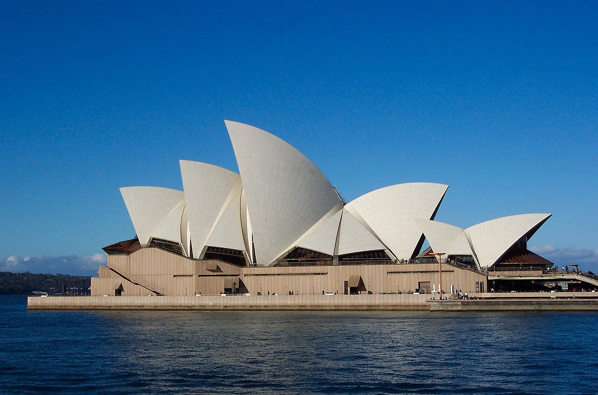
Welcome to Australia
Australia brings together tropical reefs, vast inland landscapes and cities set around beaches and harbours. Aboriginal and Torres Strait Islander cultures connect people with Country across a continent of remarkable regional variety.
Explore a little further
Landmarks, landscapes and the stories behind them. Select a photograph for a closer look.
Jørn Utzon's sculptural performing-arts complex occupies Bennelong Point on Sydney Harbour. Its shell-like roof forms are internationally recognised, while the building's theatres host a wide range of performances.
No machine-readable author provided. Roybb95~commonswiki assumed (based on copyright claims). · CC BY-SA 3.0 . Resized as needed and converted to WebP. No crop.
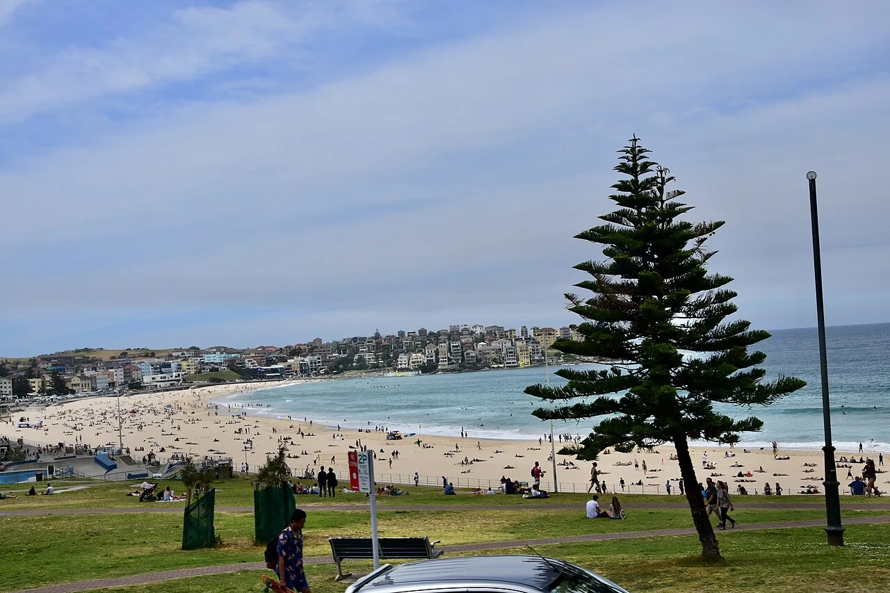
This sandy ocean beach sits among Sydney's eastern suburbs and has a strong surfing and lifesaving identity. The promenade and coastal walking route connect its seafront with neighbouring bays.
Ank Kumar · CC BY-SA 4.0 . Resized as needed and converted to WebP. No crop.
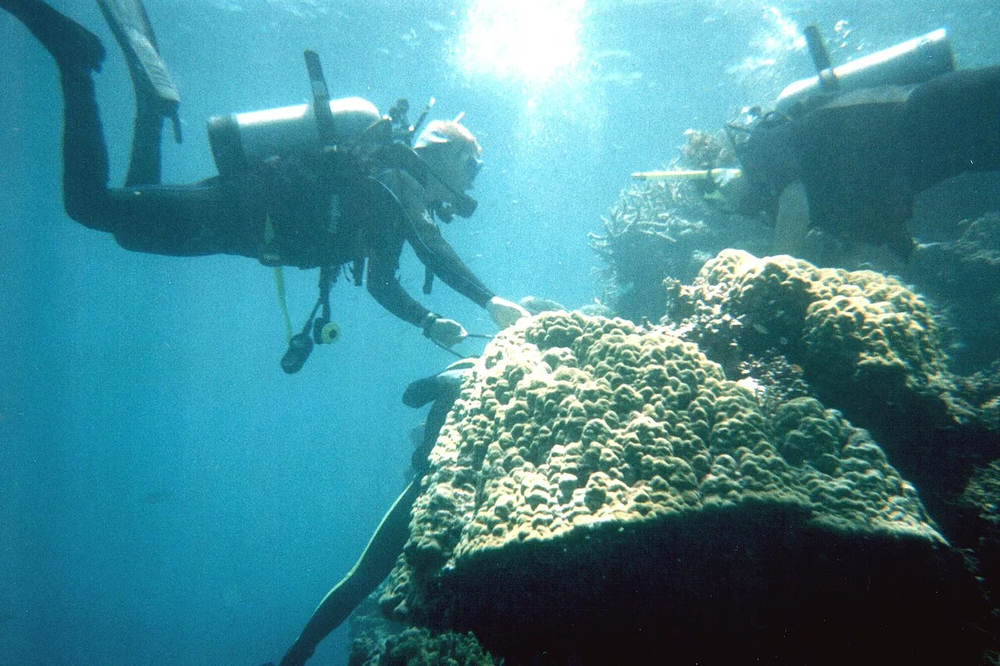
Off Queensland, this immense reef system contains coral reefs, islands and diverse marine habitats. Boat-based experiences introduce its underwater landscapes, with conservation central to visiting this World Heritage ecosystem.
Cookaa · CC BY-SA 3.0 . Resized as needed and converted to WebP. No crop.
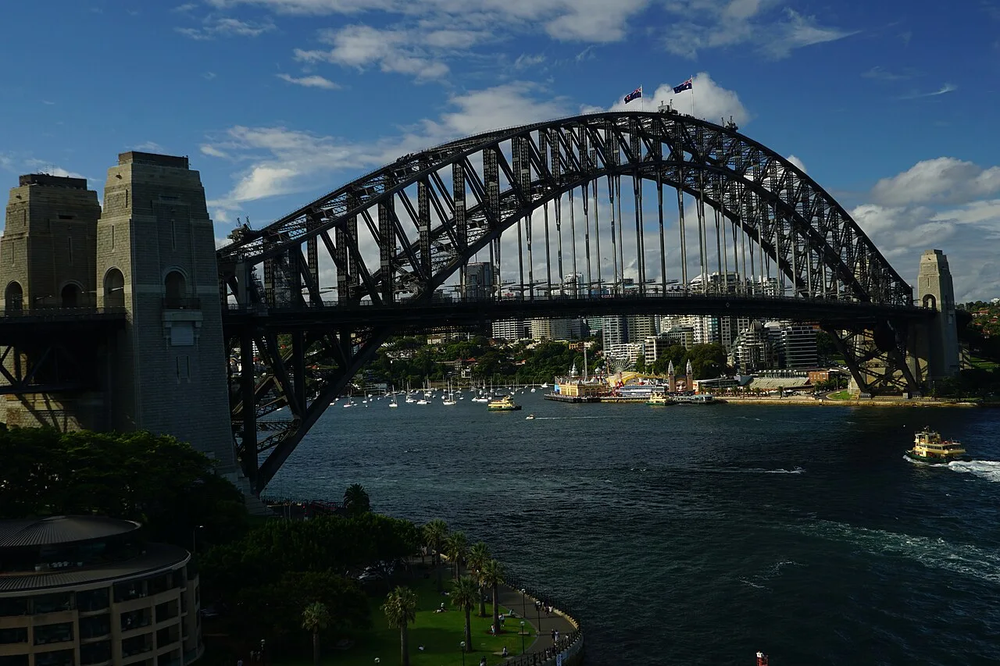
The steel arch bridge links central Sydney with the North Shore across the harbour. Its pedestrian route offers a close view of the structure and perspectives toward the Opera House.
thinkrorbot · Public domain . Resized as needed and converted to WebP. No crop.
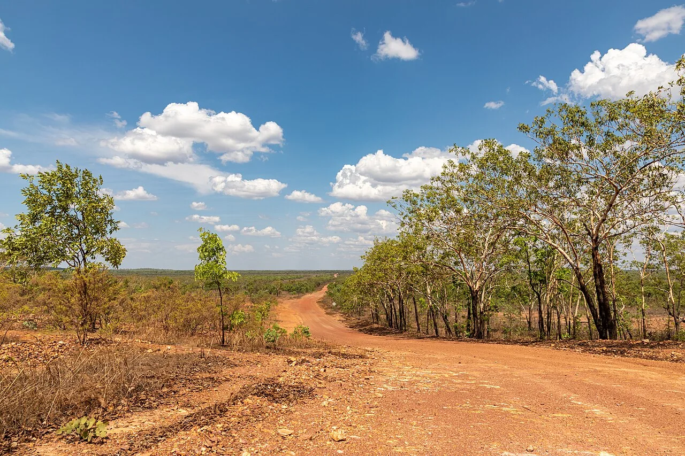
Wetlands, sandstone escarpments and Aboriginal rock-art sites form part of Kakadu's World Heritage landscape. Bininj and Mungguy Traditional Owners maintain deep cultural connections with this seasonally changing country.
Dietmar Rabich · CC BY-SA 4.0 . Resized as needed and converted to WebP. No crop.
Explore a little further
Aboriginal and Torres Strait Islander peoples hold diverse cultural traditions and connections to Country. Major museums and galleries also present the art, natural history and many communities of contemporary Australia.
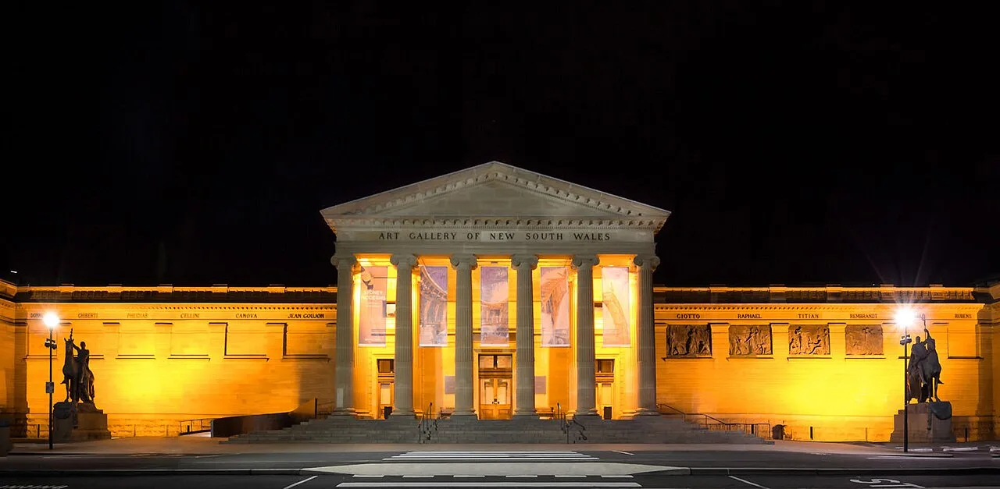
Art Gallery of New South Wales
jasoncstarr · CC BY-SA 2.0 . Resized as needed and converted to WebP. No crop.
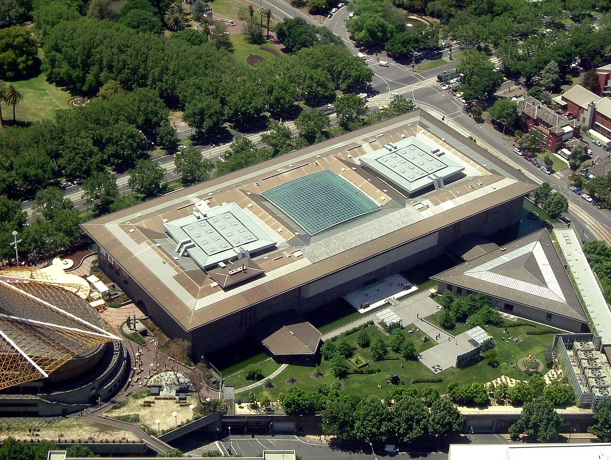
National Gallery of Victoria
Lakeyboy at English Wikipedia · Public domain . Resized as needed and converted to WebP. No crop.
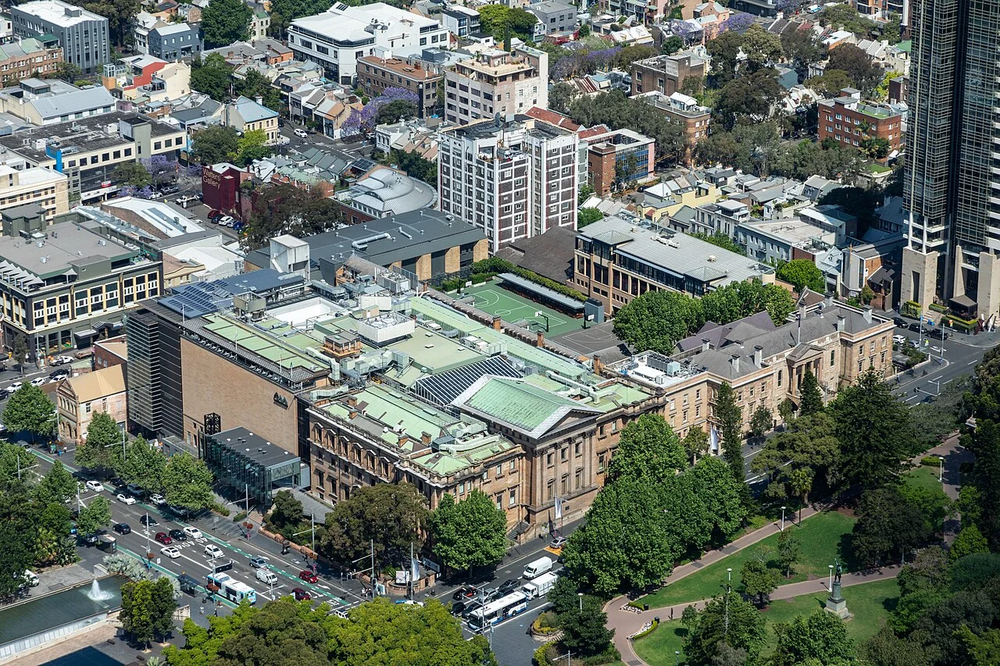
Australian Museum
Dietmar Rabich · CC BY-SA 4.0 . Resized as needed and converted to WebP. No crop.
Explore a little further
Australian food includes bakery classics and everyday favourites alongside regional produce, Indigenous ingredients and the cooking traditions of many migrant communities.
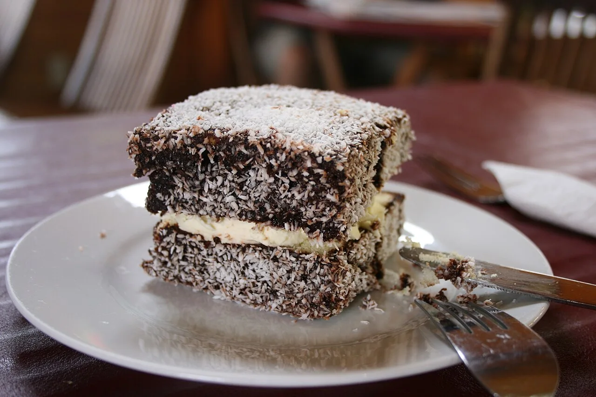
A lamington is a square of sponge cake coated with chocolate icing and desiccated coconut, sometimes filled with jam or cream.
Spacekadet at English Wikipedia · Public domain . Resized as needed and converted to WebP. No crop.
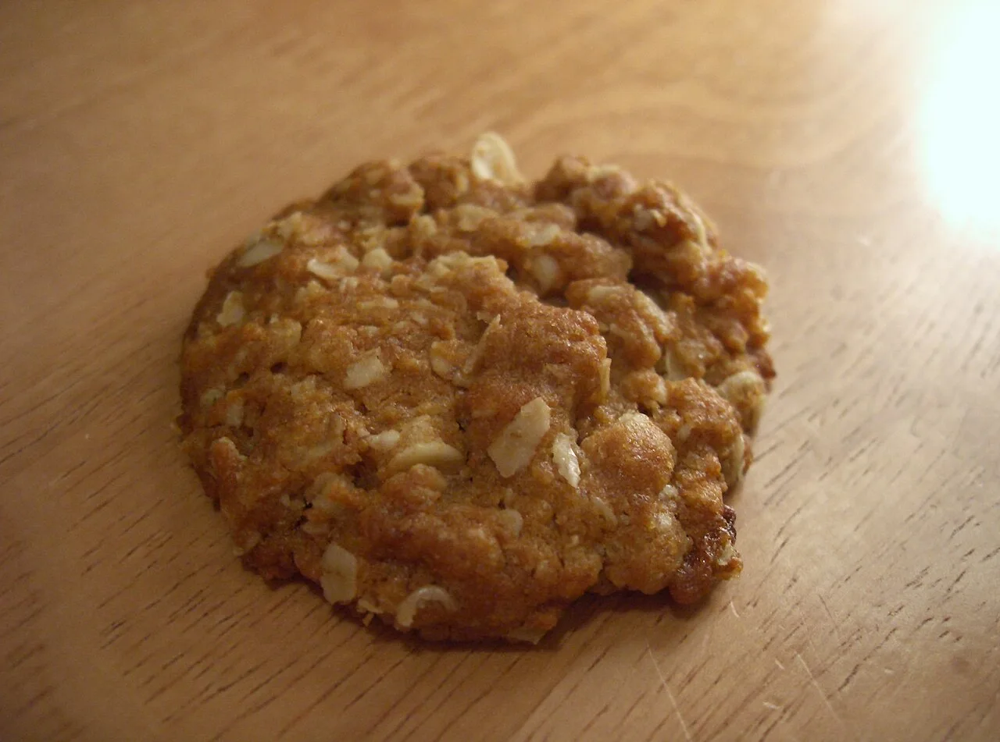
This sweet, eggless biscuit uses rolled oats, butter and golden syrup, with coconut included in many familiar recipes.
me ( w:User:pfctdayelise ) · CC BY-SA 2.5 . Resized as needed and converted to WebP. No crop.
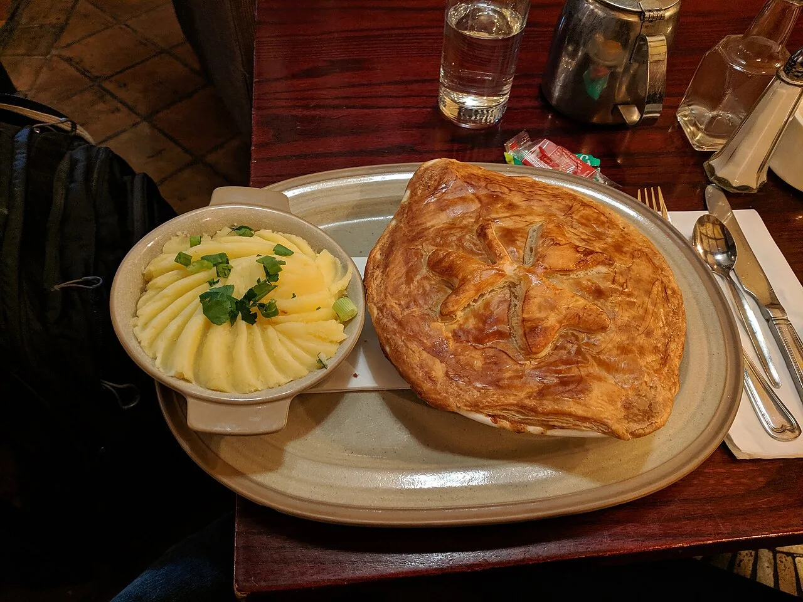
The familiar individual meat pie encloses minced or diced meat and gravy in pastry.
Grendelkhan · CC BY-SA 4.0 . Resized as needed and converted to WebP. No crop.
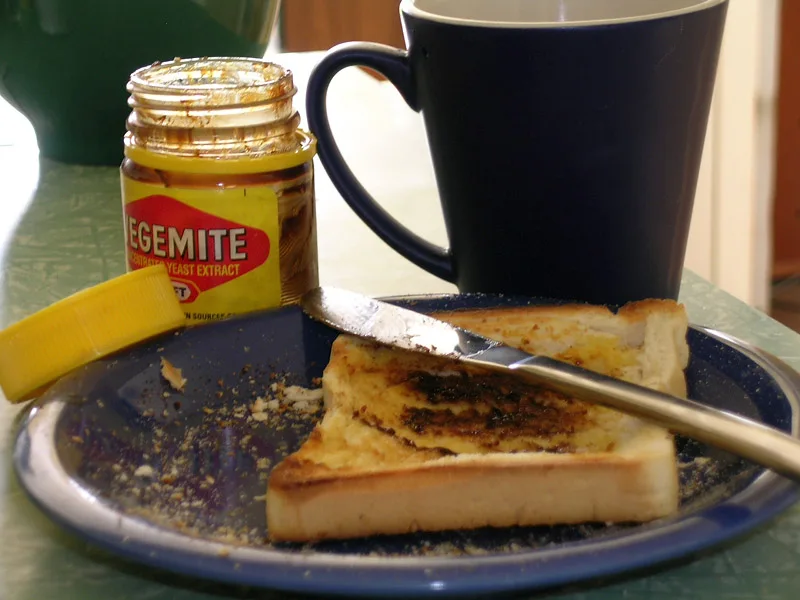
Vegemite adds a salty, savoury yeast-extract spread to buttered toast, usually in a thin layer.
s2art · CC BY-SA 2.0 . Resized as needed and converted to WebP. No crop.
Explore a little further
Harbour ferries, coastal road journeys and rainforest railways make the journey itself part of exploring Australia.
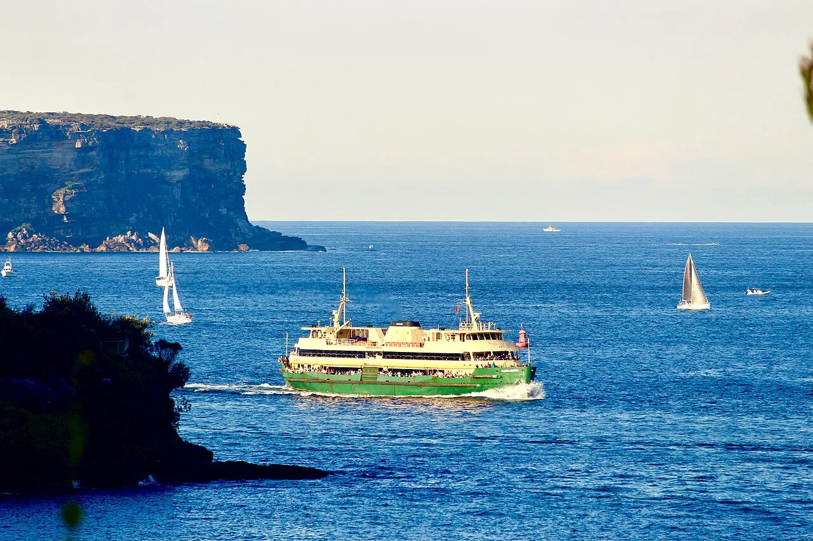
Cross Sydney Harbour by ferry to Manly, watching the Opera House, Harbour Bridge and bays before exploring the beachside suburb.
Timovchinnikov · CC BY-SA 4.0 . Resized as needed and converted to WebP. No crop.
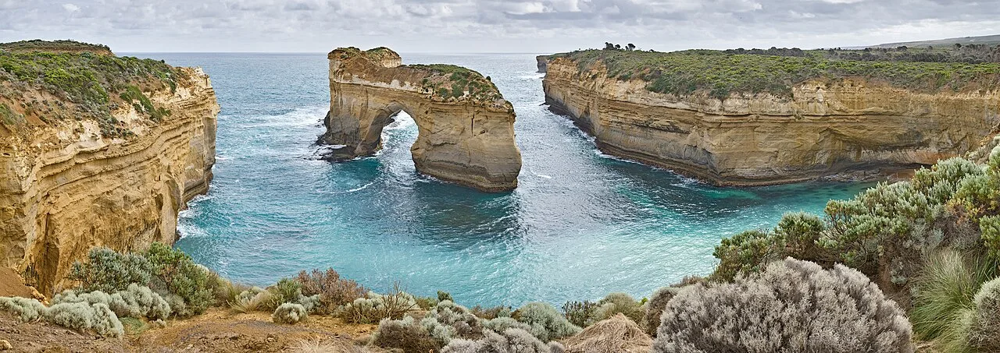
Travel Victoria's coastal route between seaside towns, beaches and forest, stopping at designated viewpoints to see the limestone coast.
Diliff · CC BY-SA 3.0 . Resized as needed and converted to WebP. No crop.
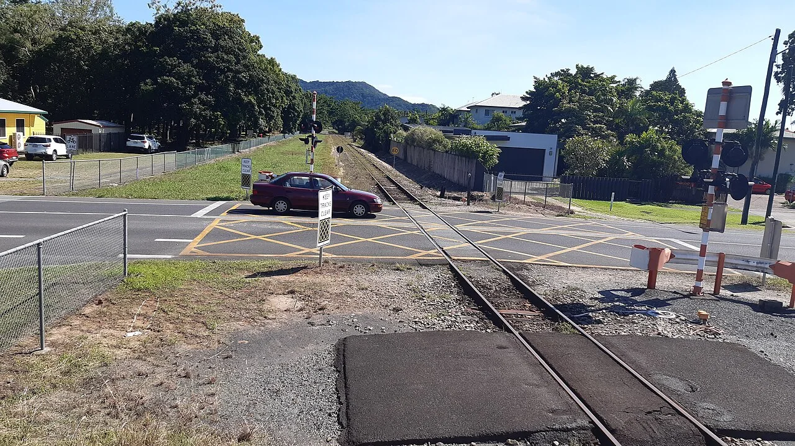
Ride the heritage railway between Cairns and Kuranda through tropical rainforest, with views of mountain scenery and Barron Gorge.
Ridiculopathy · CC0 . Resized as needed and converted to WebP. No crop.
Explore a little further
Sydney's Circular Quay and Darling Harbour combine waterfront dining, cultural venues and evening views of the city.
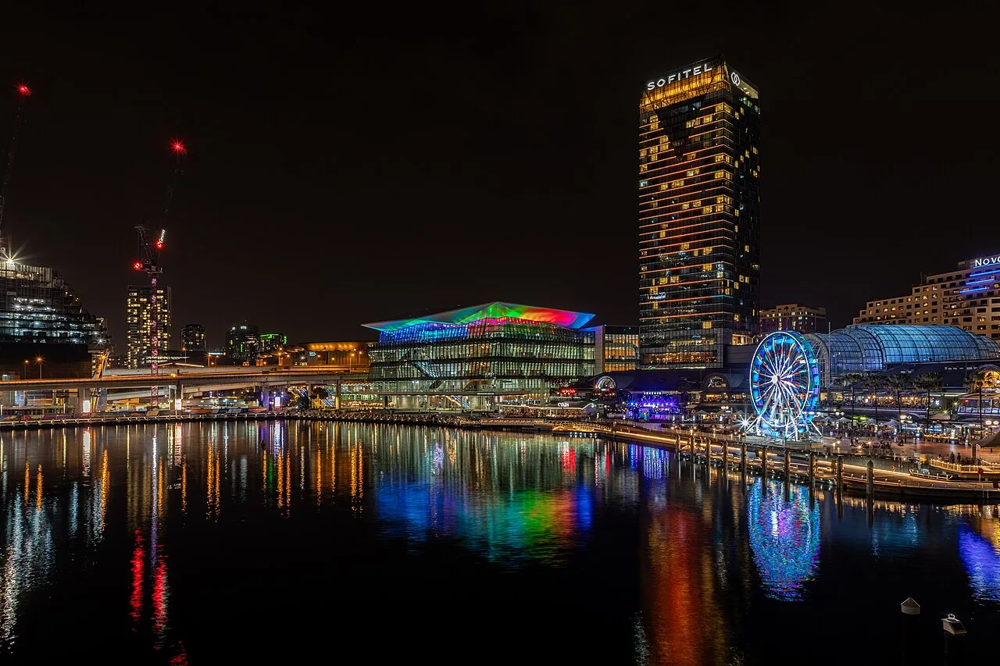
Darling Harbour
Dietmar Rabich · CC BY-SA 4.0 . Resized as needed and converted to WebP. No crop.
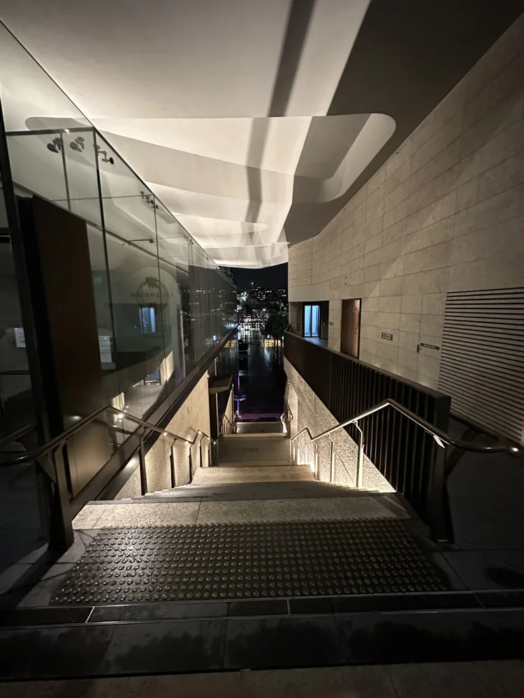
Circular Quay
Chris.sherlock2 · CC BY-SA 4.0 . Resized as needed and converted to WebP. No crop.
Explore a little further
A country overview with selected attraction markers. Use local transport information to plan the route between regions.
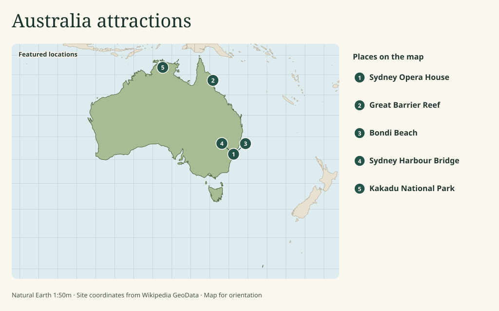
Illustrative overview. Marker locations and map sources are documented below.
A place to settle in
Two places to consider for your trip. Check room choices, current prices and availability directly with each hotel.
Sydney
Hotel in central Sydney, inside a restored heritage building with Neo-Gothic architecture and Art Deco interiors, offering rooms and suites near Town Hall.
Check roomsOfficial hotel website · opens in a new tab
Sydney
Hotel at Circular Quay in Sydney, with rooms and suites offering city or harbor views, Mode Kitchen & Bar, Grain Bar and spa facilities.
Check roomsOfficial hotel website · opens in a new tab
The hotel sets its prices, booking terms and payment currency. Some properties confirm reservations after an enquiry.
Know your money
Get familiar with the local currency and estimate what an amount in your own currency is worth.
Daily reference Rates By Exchange Rate API . The rate date appears with your estimate.
Morning to evening · Australia
No machine-readable author provided. Roybb95~commonswiki assumed (based on copyright claims). · CC BY-SA 3.0 . Resized as needed and converted to WebP. No crop.
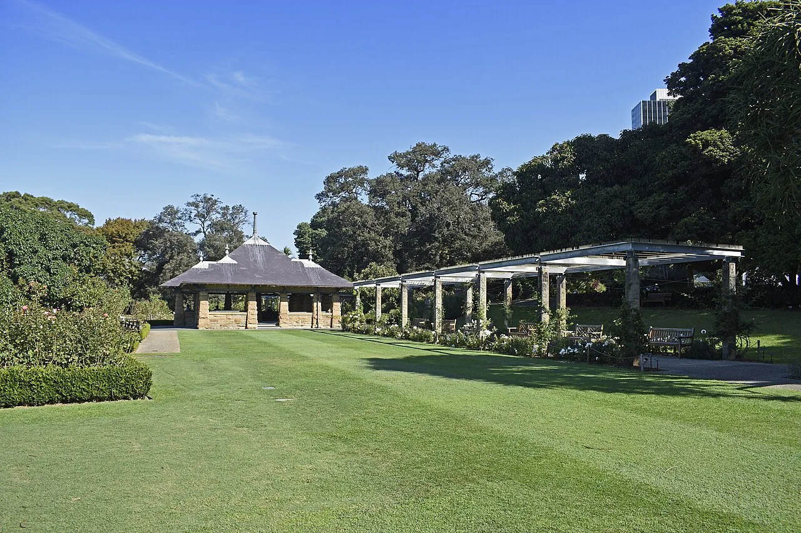
Ymblanter · CC BY-SA 4.0 . Resized as needed and converted to WebP. No crop.
Ank Kumar · CC BY-SA 4.0 . Resized as needed and converted to WebP. No crop.
Dietmar Rabich · CC BY-SA 4.0 . Resized as needed and converted to WebP. No crop.
Suggested order and approximate times, with breaks for meals and travel. Confirm access, reservations, transport and operating hours locally. Evening photographs do not guarantee an event or performance.
Confirm arrangements with the official visitor resource .
Visitor resource: https://www.australia.com/en
Guide: Atlas & Away · Australia · researched 18 November 2026.
Explore a little further
A starter in Australian English. The pronunciation hints are approximate; listen to local speakers and ask politely when unsure.
| Phrase | Meaning | Say it approximately |
|---|---|---|
| No worries. | No problem. | — |
| Arvo. | Afternoon. | — |
| Brekkie. | Breakfast. | — |
| Servo. | Petrol station. | — |
| Cuppa. | A cup of tea or another hot drink. | — |
A little preparation
0 of 4 preparations complete
Saved places and checklists use this browser’s local storage. They are not an account or a booking.
Before you go
The example itinerary stays around Sydney. The full country guide covers several regions; allow extra days and transport for places beyond that route.
Use the Hotels section to open a property’s official website and check rooms, prices and booking terms. You complete any reservation and payment with the hotel.
Open the enquiry page or email profannan712@gmail.com .
Guide researched on 18 November 2026. Text and code were developed with ChatGPT/Codex assistance for this student learning project.
Phrase reference: Australian English phrasebook .
Natural Earth (base data), ChatGPT in Codex (map design) · Public-domain Natural Earth base data . Projected Natural Earth boundaries, added labels and site markers, and exported SVG.